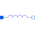

InductorDCIdeal linear electrical inductor for electrical DC machines |

|
Information
This information is part of the Modelica Standard Library maintained by the Modelica Association.
The linear inductor connects the branch voltage v with the branch current i by v = L * di/dt.
If quasiStationary == false, the electrical transients are neglected, i.e., the voltage drop is zero.
Parameters (2)
| L |
Value: Type: Inductance (H) Description: Inductance |
|---|---|
| quasiStationary |
Value: Type: Boolean Description: No electrical transients if true |
Connectors (2)
| p |
Type: PositivePin Description: Positive electrical pin |
|
|---|---|---|
| n |
Type: NegativePin Description: Negative electrical pin |
Used in Components (3)
|
Modelica.Electrical.Machines.BasicMachines.DCMachines
Electrical shunt/separate excited linear DC machine |
|
|
Modelica.Electrical.Machines.BasicMachines.DCMachines
Series excited linear DC machine |
|
|
Modelica.Electrical.Machines.Interfaces
Partial model for DC machine |